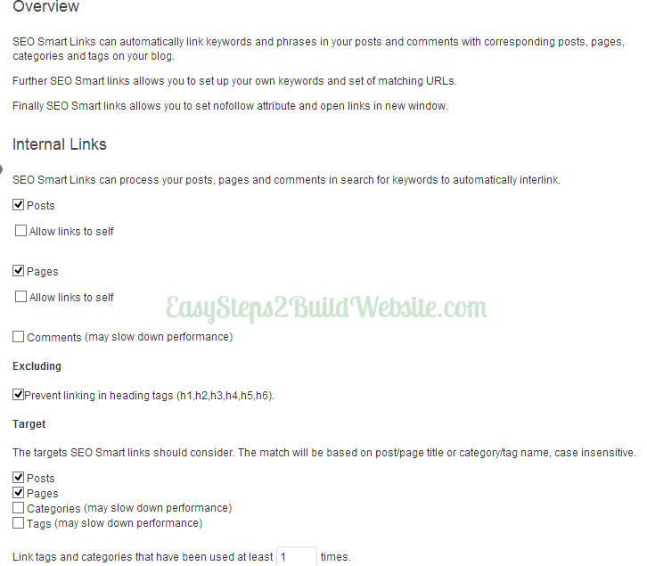
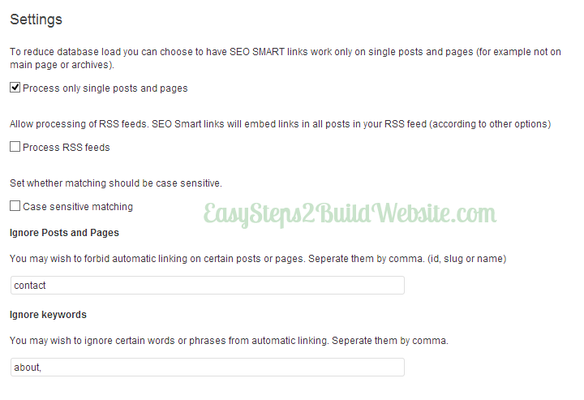
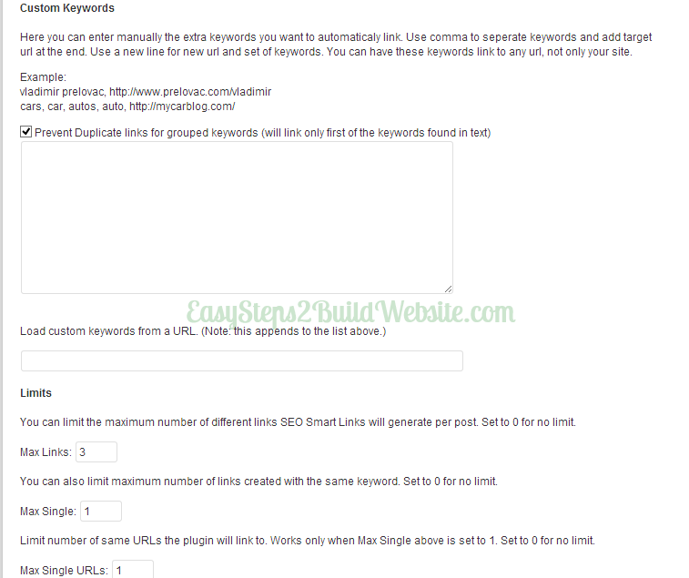
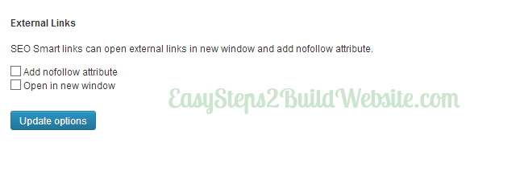
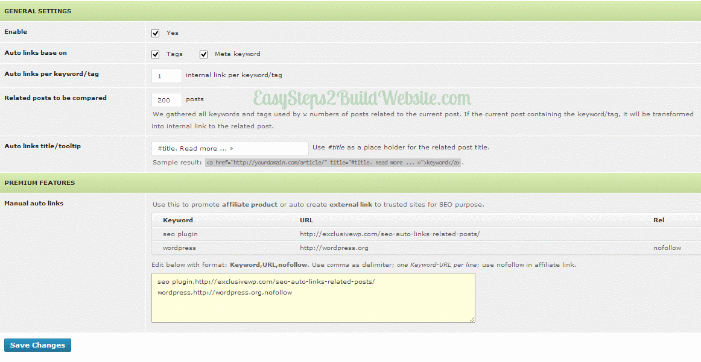

Couple of days back, I shared a post on how to interlink posts in WordPress using Insights Plugin (I have also covered the benefits of interlinking in that post). The method of manually interlink your internal posts is good, however its not efficient as sometimes you want to link to new posts from older posts. In this post, I’m gonna share two useful free WordPress plugins, which you can use to auto interlink your blog posts. We have two free WordPress plugin to do this task – SEO smart links & SEO alrp.
One of the Popular plugin for auto interlinking: SEO Smart Links
SEO smart links plugin automatically links to your posts based on the title, tag and category. For example you have written a article on “Cars” and another article on “Ford car”, in such scenario this plugin will auto create interlink between these two articles as they are on related topics. This way, you would be able to reduce bounce rate and can have SEO benefits as well.
Moreover, you can also define keywords/URL set to link the URL for the user-defined keyword. You can have more than one keyword for a url in order to vary anchor text. This feature can also be used for external links.
Settings Screenshots –
Screen 1: You can have control on – exclude heading to be interlinked, target urls can be of post/pages/category/tags.

Screen 2: You can specify whether you want case sensitive matching. Also, you can have few keywords ignored, such keywords will not be a part of the link. It’s a good idea to rule out words like contact, privacy, author etc.

Screen 3: Specify Keyword set and url. In this way whenever the keyword occurs on any of the post throughout the website, it will automatically be linked the given URL. This feature comes handy when you want to link to your articles for a specific keyword, in order to make them rank for that keyword.

Screen 4: You can specify whether you want to add rel=”nofollow” to the external links. Also, you can have them opened in the new window.

SEO ALRP
Another useful plugin is SEO Alrp, its really easy to setup this plugin. This plugin can also be used for displaying related posts.

That’s all for now. Let us know which method you prefer to link your posts – auto or manual. Do let us know if you are using some other plugin for auto linking your blog posts.
Hi , I’m linking my posts manually till now.I’ll try SEO ALRP and see if I’ll get any benefits .
Thanks